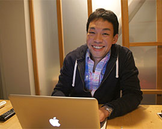
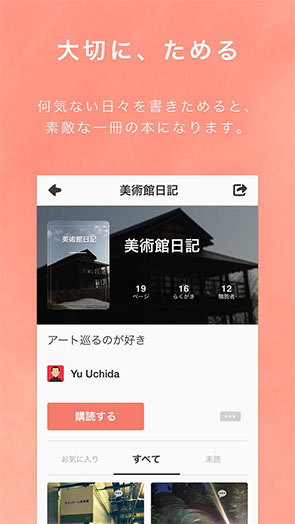
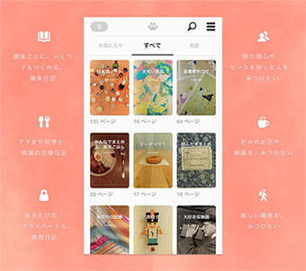
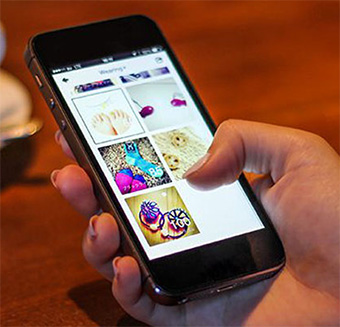
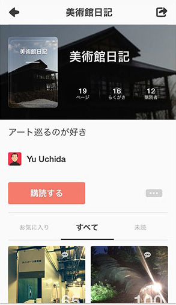
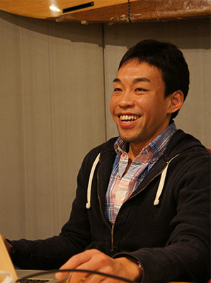
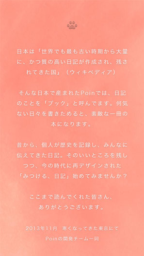
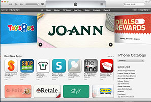
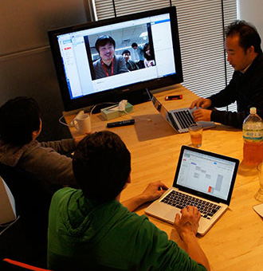
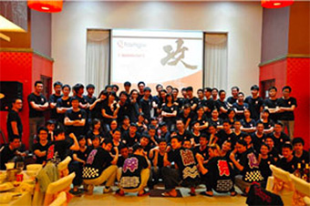

開発事例
開発事例インタビュー
みつける、日記アプリPoin
リリースしてすぐにApp Storeの「スタッフのおすすめアプリ」として紹介され、鮮烈なデビューを飾った日記共有アプリ「Poin」。
フランジアではこのアプリの開発から運用をお手伝いさせていただいております。
Poinの運営会社、M&C, IncのCEO古原氏にフランジアとの共同開発にについてお話を伺いました。

古原 忠直
M&C, Inc共同創業者 / CEO
2012年にM&Cを創業。以前は、三菱商事、日米複数のVC、ImproVista創業を経て、12年間以上に渡り日・米・中でベンチャービジネスの立ち上げと事業支援に従事。
東京大学経済学部卒、スタンフォード大学経営大学院（MBA）卒業。
Poin - 想いをつづる、写真日記 →

まず、Poinとはどんなアプリか、内容と特徴を教えてください
Poinは、みつける、日記
ひと言で言うと日記アプリで、我々は「みつける、日記」と呼んでいます。「みつける」というのは大きく二つあって、まず、人の好きなものをみつけること。友達の「美味しいお店の日記」からいいレストランをみつけたり、おしゃれな人の「今日のコーデ日記」からかわいい服をみつけたりして、自分の好きなものを発見していく。
もうひとつは、自分自身が日記を書くことで、自分ってこんな人なんだ、というのを発見していく。発信することで、自分のテイストが表れるので反応があったり、興味の合う人がみつかる。書きためることで自分の趣味趣向が見えてくる。そういう自分自身の発見です。
Poinで実現したいこと、目指していることは何ですか？
一人ひとりの物語を価値あるものに
Poinは、プロダクトミッションとして「一人ひとりの物語を価値あるものに」を掲げています。みんなが知ってるものや日々経験していることって、書きためていったり共有すると価値があるよね、というのが原点です。
僕だったら今、日本酒が大好きです。もともとはそこまで知らず、日本酒好きの友人に勧められて飲むようになり、なんとなく記録のためにメモしたり、ラベルの写真を撮っていました。それが、書きためていくうちに日記風になっていき、こんなに美味しくて職人技が凝縮されている芸術品のようなものだと知るほど、人にもその日本酒の良さを伝えたくなる。関心がある人から色々聞かれて、それがまた楽しくてもっと発信する。いつの間にか、自分が見返して楽しいだけでなく、日本酒を知ろうとしている人に提供できる情報が集まっていきました。
極端な例かもしれないですが、みんなそういうものを持っていると思うんです。ディープな趣味でなくても、例えば出会ったいい曲や映画、たまたま入って良かったお店など、残しておきたいちょっとした思い出や共有したい発見など。
ただ難しいのは、自分の知っていることや経験を人とどう「タイムリーに」共有するかということ。発信者が伝えたいタイミングと、読み手が知りたいタイミングには、常にズレがあるからです。日記って、少し工夫すると、それにピッタリだと着目しました。気軽に始められて、書きためられて、共有するとどんどん良くなっていく。そんなことを実現したいと思っています。

書きためたものを人と共有する方法はほかにもありますが、Poinは何が違うのでしょうか？
本やブログで共有するのはハードルが高い
書きためて共有する手段は、本やブログなど他にも沢山あると思います。ただ、本を執筆するのは、当然ハードルが高い。すごく考えて編集しなければなりませんし、そもそも普通はできないことです。ブログですら、ハードルが高いと思うんですよ。
実は以前、日本酒のブログを書き始めたことがあるんです。でも、始めるまでにいろいろ手間がかかる。いざ始めると、いつも日本酒だけ飲んでいる訳ではないので、他のことも書きたくなる。大好きなスニーカーのこと、注目しているベンチャー企業のこと、今日食べて美味しかったもの、など。
それぞれ別のブログを作るほどでもないので、同じブログに色々書いてました。でも、日本酒好きの人がみつけてくれても、スニーカーの話も多い。僕の近況を知りたい友人が訪れても、関心がないベンチャーのニュースの話も多い。1つ1つのテーマが薄まるので、だんだん読まれなくなり、時間が経つと書きたいテーマが増える一方なので、自分の記録としてもだんだん面倒になって、続きませんでした。
書き手にとっての「気軽さ」と読み手にとっての「価値」
結局、書き手にとっての「気軽さ」と読み手にとっての「価値」って、通常相反すると思うのです。だから、Poinでは、書き手にとっては日々をなんとなく綴っていくぐらい気軽であること、読み手にとってはテーマとコンテクストが分かってコンテンツを選べること、を両立したかったんです。なので、自分の好きなテーマで日記がいくつでも作れる。例えば、「日本酒」「スニーカー」「今日のランチ」と別々の日記を直ぐに作れます。実際、この1ヶ月で私のPoinのそれぞれの日記に百人単位の購読者がつきましたが、ほぼダブりがないんです。
シェイクスピアでなくても、ステキな物語は書ける
日記が増えて、投稿がテーマごとに積み重なっていくと、その人の個性がみえてくる。何気ない日々を書きためるだけで、それぞれの日記がステキな1冊の作品になっていくんですよ。Poinでは日記のことを「ブック」と呼んでいる由来です。社内ではよく「シェイクスピアでなくても、ステキな物語は書ける」って言っているんですが、誰でも気軽に日々を綴るだけで、「本」のような物語になっていく。それを興味や関心ごとに共有できる。そんなアプリを目指しています。


所謂「日記」というのは文章で残しておく形がスタンダードですが、Poinの「日記」はどう違うのでしょうか。
日記として一番素直な気持ちが残せるもの
Poinの日記は、「習慣化」「気軽さ」と言う意味も含めた比喩です。違いは大きく2つあって、1つ目、機能面では複数の「ブック」が簡単に作れて、それを関心ごとに購読・共有できて、写真が中心であること。ちょっとした気持ちを、言葉や国境を超えて伝えられるように、今は写真は必須ですが、最低限のものだけで日記を表現できるようにしています。日記って文章を書くイメージですが、Poinでは一言でも大丈夫です。人は「夢」を忘れてしまいますが、その時、その場でちょっと綴れるもののほうが、日記として一番素直な気持ちが残せると思っています。
ブックのタイトルはちょっとしたコンテキストなんです。同じ空の写真ひとつでも「今日の天気」というブックを作っている写真好きの人もいれば、「エベレスト登山記」というブックを作っている登山家もいる。Poinでは「ブック」が中心で、ブックというコンテクストは、その人のアイデンティティを表わしていくストーリーなので、同じ写真でも伝わり方が全く違う。
個性豊かで前向きなユーザーが使ってくれているアプリ
ただ、2つ目、Poinの最大の特徴は個性豊かで前向きなユーザーの皆さんです。これは言葉で表現するのが難しいので、ぜひ一度色々な方のブックを見てみてください。こんな場所って他にないと思います。本当に個性豊かで、型にハマってないというか、その人の色がでるブックが多いんです。そして、本当にポジティブでいい人が多いコミュニティーです。励まし合ったり、応援したり、見ていると癒やされる内容が多くて、感動しています。

Poinを作ろうと思ったきっかけを教えてください。
「みつける」を、検索エンジンや口コミサイトより楽しく、
簡単に
「みつける」ってことを、簡単にしたかったんです。単純に効率化というよりも、それを、趣味や関心の合うう人とのコミュニケーションの中で、楽しく行えればと。
例えば、口コミサイトで「日本酒がうまい店」を探してみても、1,000件以上の結果が出てきて、かつみんなの平均点で「一般的に何がいいか」という集合知なので、趣味にあったものや、日本酒にすごくディープな人が何が好きだとかが全くわかりません。みつけるといえば検索エンジンですね。「日本酒 レストラン」で検索すると、5,000万件近い結果が一瞬で出ますが、「誰にとっても同じ結果」で全く絞れない。結局、詳しい人に聞く方が早い。日本酒に限らず、こういう経験が沢山ありました。情報が多すぎて「みつける」が、簡単じゃなくて難しくなっていて、手間になってる。
でも、何かを発見するのって、本当は楽しくないですか？新しいお店を開拓したり、かわいい靴をみつけたり。例えば、友達と一緒に買い物に行く。これもいい洋服を「みつける」行為ですが、会話を楽しんだり、いろいろ見たり、友達や店員さんから色々教えてもらったり。いい服にめぐり逢えたら当然嬉しいですが、その過程も楽しい。
Poinが目指す「みつけるを、楽しく、簡単に」というのは、みつけるって過程自体を楽しみながら、少しずつ簡単にしていく、ってところからきています。気軽に発信することで、自分だけでなくみんなの「みつける」も簡単で楽しくなっていくといいなと。
「流れていくもの」ではなく「蓄積されていくもの」を
じゃあ、どいう場があるといいのか。ソーシャルネットワークやコミュニケーションの場はたくさんあるんですけど、今はすべてのものが「リアルタイム」です。その場でその投稿を見てないと楽しめないし、投稿する側もタイミングとか計らないと見られるかどうかもわからない。3ヶ月前に友達がオシャレなカフェに関するツイートをしていたなと思って探しても見つからないんですよね。
今の世の中の流れって、なんでもかんでもその場限りなものが溢れている。でも、人と人とのコミュニケーションはそういうものだけではなくて、３年後にみても楽しめる情報があると思っていたんです。「フロー」ではなく「ストック」、「流れていくもの」ではなく「蓄積されていくもの」、その辺のまったく異なる世界観を目指しています。


Poinは今後どのように展開されていく予定ですか？
日本発のサービスとして世界を日記でつなげたい
世界中が日記でつながっていき、みんなにとって楽しく便利な”インタレスト・グラフ”を作っていくのが1つの大きなゴールです。
そのために、まずは「みつける」というものを強化すべく、色々な新機能の構想が既にあります。似た趣味の人がみつかる、逆に今までぜんぜん知らなかったことがみつかる、知らない自分がみつかる、自分にあったお店がぱっとみつかる、そういったいろんな「みつける」を快適にしたいです。
そして、世界展開。このアプリはデフォルトの言語が英語になっているんですね。日記というのは世界中どこにもあるものなので、日本だけじゃなくて世界中で使われるようにしていきたいです。歴史を綴ってきたものって日記なんですよね。ウィキペディアによると日本は最も古い日記の歴史があるらしいんです。そんな歴史のある日本発のサービスとして世界に広めて行きたいです。
実際、日本以外の国でもダウンロードされているのですか？
App Storeのスタッフのおすすめとして２８カ国でフィーチャーされて、何カ国もの国の人たちにダウンロードされています。欧米、アジア、中東、南米、アフリカなどなどいろんな国でブックが作られています。

日本ではプロモーションをされていますか？
PRや広告はこれまで一切やらず、ユーザーが広めてくれるぐらいのアプリになるまでは、プロダクトに集中するって方針で進めてきました。幸いなことに日本ではスタッフのおすすめアプリナンバー１として２週連続して紹介していただき、お陰様で爆発的にダウンロードされユーザー数が増えています。
Poinの開発体制について教えてください。
弊社４人＋フランジアのチームで開発
弊社は私を含めて４人です。作る側という意味ではエンジニア、デザイナーがそれぞれひとり、そしてマーケティングを入れた４名体制です。開発という点では弊社にはエンジニアが一人しかいませんので、サーバサイドをすべてフランジアにお願いしています。バックエンドはすべてRuby on Railsで開発しています。コンセプトがあって会社を作り、メンバーが入ってきてからリリースまでに１年くらいかかりました。最初のスタートからフランジアにはチームの一員としてお願いしています。
Poinを開発するうえで課題だったことは何ですか？
ノーアイデアからのスタート
「みつけるを、楽しく、簡単に」って大きな目的は明確だったのですが、具体的にどんな形にするかは、実はノーアイデアだったんですよ。はじめは「こんなこと探しています」といった誰かが投稿しているものに答えるQ&Aサイトがいいんじゃない？といったアイデアがバラバラとありました。そういう曖昧な考えのままチームを作りながら議論して、徐々に形にしていきました。ローンチ前のベンチャーってそういう状態だと思うんですよ。完全アジャイル、アジャイル以前にそもそもコンセプト、大きな目的はあったものの、そこにいたるまでのロードマップがあまり見えていない中でスタートしたんです。ある程度の段階で作りはじめて、改善して、壊してというのをやっていきたかった。そんな手探りな状態ではじめたので、何がというより全てが課題でした。
アンドロイド版は？
問い合わせはあるのですが、今は具体的な予定はなく、iPhone版のみです。今後は当然、検討していきます。
なぜ、オフショア開発をしようと考えたのでしょうか？過去にオフショア開発をされたことはありますか？
社員のような感覚をもってくれることを重要視
フランジアと仕事をするのは今回がはじめてです。正直、オフショアにはしたくなかったんです（笑）。オフショアよりは日々社内で面と向かって開発できたほうがいいなと思っていたんですよ。まずは信頼できる人のいる会社で少しまわしてみて、判断しようという考えではじめました。実際にお願いしてみたら、すごく身近でやってるような密な感覚で、柔軟に対応してくれましたので、これだったらほぼ同じ部屋でやってるのとそんなに変わらないなと思えたんです。それがすごく快適でフランジアに全面的にお願いすることにしました。
みんながオフショアを選ぶ一番の理由はコストになってしまうかと思うんですね。ただコストがもっと安い日本のとことやっていたかというと、今振り返るとやらないですね。そのステージにあわせて、一言でいうと「柔軟性」があり、あたかも社員のような感覚をもってくれることを重要視していました。

コミュニケーションは問題なかったですか？
適度に離れているので無駄がない
最初は現地のメンバーの方とベトナムで開発合宿をやる予定で、「落ち着いたら来てください」と言われていたのですが、ぜんぜん落ち着かないままリリースまで来てしまいました（笑）。それでもまったく問題ありませんでした。行ったほうがベターだし現地の方ともお会いしたいんですけど、その必要がないくらいスムーズに開発を進められました。逆に同じ場にいないことの良さもあるかもしれません。
適度に離れているので無駄な会議がなくなります。期限をきっちり守ってくれるので、固定の定例会議も一度も動かしたことがなく、どんどん会議の時間が短くなっています。開発のコミュニケーションに最適なツールもフランジアから提案いただきうまく機能しています。来年の創業パーティーにはぜひ来て欲しいと言われているので、そこはぜひ参加したいと思っています。

開発で苦労したことはなんですか？印象に残った秘話などを教えてください。
急遽膨大なユーザー増があったが問題なく乗り切れた
ローンチ直後、とあるきっかけで急遽膨大なアクセスに耐えられるハードの対応をしなくてはならなくなりました。36時間以内に。深夜でしたが、直後にフランジアに電話をして「明日一日、バッグエンドのエースたちを100％こっちに張り付けて欲しい」と無理なお願いをしたんです。その数時間後にはオンラインで会議をはじめてくれ、夜遅い時間にも関わらず集まっていただき最善策を議論してくれました。次の日まる一日、CTOの方をはじめ何人かの方で見ていてくれたおかげで、何一つトラブルもなく乗り切れました。うちのエンジニアもほぼ徹夜でしたが、ひとりでは間違いなく乗り切れませんでしたね。そんな協力体制を柔軟に作ってくれたおかげで、一度も落ちることがなく乗り切れました。
私は十数年以上、ベンチャーを中心とした色々なビジネスに携わってきましたが、ここまで見事に、親身になって対応して頂いた経験は初めてでした。本当に、感謝しています。
クライアントから見て、フランジアの「良いところ」を教えてください。
創業メンバーのように柔軟な対応をしてくれた
ウェブベースのQ&Aから途中でiOSのアプリへ大きな方向転換をしたわけですが、フロントエンドの言語も変わるくらいの大きな変更があったにも関わらず、なにひとつ嫌な顔せずに「いっしょにがんばりましょう！」と言って対応してくれたことが、フランジアを選んで良かったと感じた一番の理由です。
急激なトラフィック対応もそうですが、普通の開発会社では絶対やってくれないと思います。社内メンバーであれば死ぬ気でやってくれると思いますが、外部の開発会社だと「それは工数に入っていないからとか・・・、他に張り付いているから」と断られてしまうと思うんですね。これまで外部の開発会社と仕事をしてきた中で、コミュニケーションの難しさを感じていました。お互い空気を読みながら仕事を進めていると結果的に妥協したものになりがちですが、まったくなかったですね。
また、こちらの事情を十分理解してくれて、柔軟に対応してくれたのもすごく良かったです。そんなにたくさん固定費を抱えられないので、状況によって開発体制を調整してくれたのは大変助かりました。プロトタイプを作るところからずっとやってくれているので、創業メンバーのひとりみたいない感じですね。お世辞抜きでそう思っています。
他の会社にもフランジアをオススメしたいですか？
みなさんとても素直でいい人
100%オススメです。いないと乗り切れなかったので、本当に100%オススメしたいですね。ハノイ工科大学の優秀な人たちがいて、日本に留学経験のある人もたくさんいるのでやりやすいです。あと、国民性なのか会社の文化なのか、みなさんとても素直でいい人なんです。メンバーのトレーニング、カスタマーサービスの教育がとてもよくできているんだと思います。今後もフランジアとは、同じチームとしてやっていきたいです。こちらはその予定でいます。